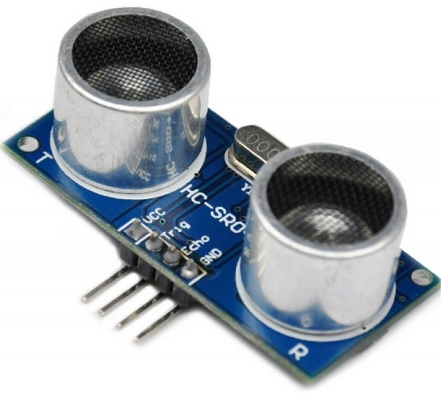
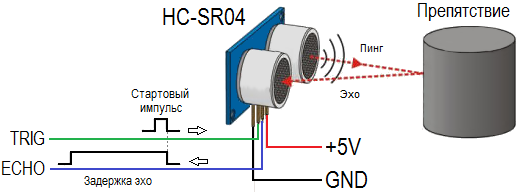
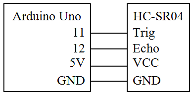

Ультразвуковой датчик расстояния
HC–SR04
Ультразвуковой датчик расстояния - модуль HC-SR04 использует акустическое излучение для определения расстояния до объекта. Этот бесконтактный датчик обеспечивает высокую точность и стабильность измерений. Диапазон измерений составляет: от 2 см до 400 см. На показания датчика практически не влияют солнечное излучение и электромагнитные шумы. Модуль продается в комплекте с трансмиттером и ресивером.
Технические характеристики HC-SR04:
- Напряжение питания: +5В – постоянный ток;
- Сила тока покоя: < 2 мА;
- Рабочая сила тока: 15 мА;
- Эффективный рабочий угол: < 15°;
- Расстояние измерений: от 2 см до 400 см (1 – 13 дюймов) с разрешением 0,3 см;
- Разрешающая способность: 0.3 см;
- Угол измерений: 30 градусов;
- Ширина импульса триггера: 10 микросекунд;
- Размеры: 45 мм x 20 мм x 15 мм.

Выводы:
- VCC – +5 В (постоянный ток)
- Trig (Т): – сигнала входа(Триггер, INPUT)
- Echo (R) – вывод сигнала выхода (Эхо, OUTPUT)
- GND – Земля
Принцип работы ультразвуковых датчиков
Действие ультразвукового дальномера HC-SR04 основано на принципе эхолокации. Он излучает звуковые импульсы в пространство и принимает отражённый от препятствия сигнал. По времени распространения звуковой волны к препятствию и обратно определяется расстояние до объекта.
Запуск звуковой волны начинается с подачи положительного импульса длительностью не менее 10 микросекунд на вывод TRIG дальномера. Как только импульс заканчивается, дальномер излучает в пространство перед собой пачку звуковых импульсов частотой 40 кГц. В это же время на выводе ECHO дальномера появляется логическая единица. Как только датчик улавливает отражённый сигнал, на выводе ECHO появляется логический ноль. По длительности логической единицы на выводе ECHO («Задержка эхо» на рисунке) определяется расстояние до препятствия.

Внимание! Так как в основу принципа действия положен ультразвук, то такой датчик не подходит для определения расстояния до звукопоглощающих объектов. Оптимальными для измерения являются предметы с ровной гладкой поверхностью.
Схема взаимодействия Arduino с HC SR04
Для получения данных, необходимо выполнить такую последовательность действий:
- Подать на выход Trig импульс длительностью 10 микросек;
- Ультразвуковой дальномер HC-SR04 посылает 8 импульсов с частотой 40 кГц;
- Когда импульсы дойдут до препятствия, они отразятся от него и будут приняты приемником, что обеспечит наличие входного сигнала на выходе Echo;
- На стороне контроллера полученный сигнал при помощи формул следует перевести в расстояние.
Подключение датчика HC–SR04 к Arduino
{kind=link}

Скетч №1
Ультразвуковой датчик HC–SR04 определяет расстояние в миллиметрах и выводит полученные значения в окно серийного монитора в среде Arduino IDE.
int trigPin = 11; int echoPin = 12; long t, s; void setup() { //Инициализируем последовательный порт на скорости 9600 бод Serial.begin(9600); //Инициализирум входы и выходы pinMode(trigPin, OUTPUT); // триггер - выходной пин pinMode(echoPin, INPUT); //эхо - входной } void loop(){ // На 5 мкс подаем логический "0" digitalWrite(trigPin, LOW); delayMicroseconds(5); // Генерируем импульс импульс длительностью 10 мкс: digitalWrite(trigPin, HIGH); delayMicroseconds(10); digitalWrite(trigPin, LOW); t = pulseIn(echoPin, HIGH); //Считываем длину эхо-сигнала в мкс s = (t/2) * 0.343; // Преобразуем время в расстояние Serial.print(s); Serial.print("mm"); Serial.println(); delay(500); }
Функция Microseconds() задаёт задержку выполнения программы в микросекундах.
Функция pulseIn() возвращает длину сигнала в микросекундах. Так как звук проходит двойное расстояние – до объекта и обратно – результат нужно разделить пополам. Чтобы получить время t в секундах, нужно разделить его на 1 000 000.
Расстояние равно произведению скорости на время:
S = V×t
Скорость звука в воздухе 343 м/сек или 0,343 мм/мкс. Таким образом, расстояние до объекта в миллиметрах:
S = t / 2×0,343 = t×0,172 [мм].
Примечание. Операцию умножения микроконтроллер выполняет быстрее, чем операцию деления. Поэтому операцию деления можно заменить на эквивалентное умножение (например :100 на ×0,01).
Источники
arduinomaster.ru - Датчик расстояния Ардуино HC SR04
soltau.ru - Как подключить ультразвуковой дальномер HC-SR04 к Arduino